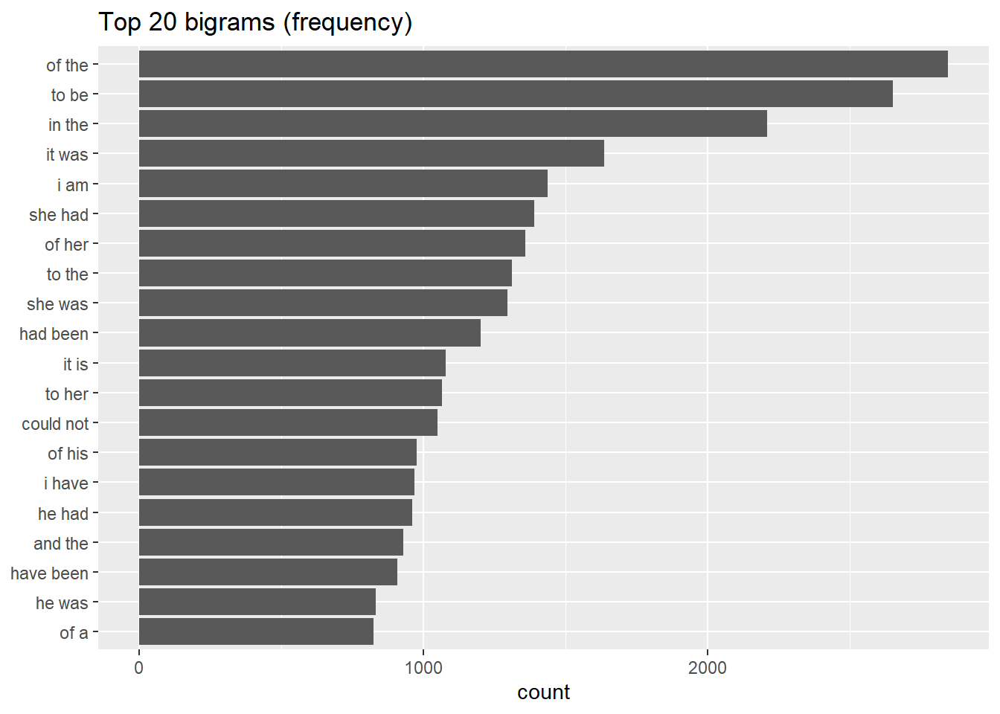

austen <- austen_books() %>%
group_by(book) %>%
mutate(
# chapter 1 / chapter iv 등 챕터 헤더 감지
chapter = cumsum(str_detect(text, regex("^chapter\\s+(\\d+|[ivxlcdm]+)\\b", ignore_case = TRUE)))
) %>%
ungroup() %>%
filter(!str_detect(text, "^\\s*$")) %>% # 빈 줄 제거
filter(chapter != 0) %>% # 챕터 전(머리말) 제거
filter(!str_detect(text, regex("^chapter\\s+(\\d+|[ivxlcdm]+)\\s*$", ignore_case = TRUE))) %>% # 헤더 행 제거
mutate(text = str_replace_all(text, "[[:punct:]]", "")) %>% # 구두점 제거
mutate(text = str_squish(text)) # 공백 정리Jane Austen 스타일 분석
N-gram · tidytext · probability · generation
Jane Austen 스타일 분석
반복되는 어휘·연결어 패턴을 수치화하고, Bigram/Trigram으로 문장을 생성해 문체의 결을 확인한다. (고대비/글자크기 토글 + 스크롤 진행바 + 맨위로 버튼 포함)
1) 전처리
챕터 분리 · 빈줄 제거 · 구두점 제거 · 공백 정리
2) 확률 계산
P(w2|w1) = count(w1,w2) / Σ count(w1,*)
3) 생성
Bigram 샘플링 · Trigram babble
N-gram 모델을 통해 배운 점
Jane Austen의 글은 N-gram으로 분석하면 언어가 반복(습관)의 규칙을 따른다는 점이 드러난다.
특히 "I must confess", "It is certain" 같은 표현은 감정의 명료화 혹은 자기 주장 강화에 자주 쓰이는 패턴으로 해석할 수 있다.
데이터 전처리: Austen 문장의 구조화
# 전처리 결과 간단 확인
austen %>% count(book, sort=TRUE) %>% head(6)# A tibble: 6 × 2
book n
<fct> <int>
1 Emma 13625
2 Mansfield Park 13359
3 Pride & Prejudice 10658
4 Sense & Sensibility 10543
5 Persuasion 7182
6 Northanger Abbey 6612오스틴 문체의 패턴적 특징
문체 시그니처(관찰)
- 감정적 어휘 반복:
I must confess,I assure you,with all my heart - 논리 연결어 선호:
therefore,however,nevertheless - 자기 서술 표현 빈도:
I must,It is
N-gram 계산 (Bigram 빈도)
austen_bi <- austen %>%
unnest_tokens(output = "bigram", input = text, token = "ngrams", n = 2)
bi_count <- austen_bi %>%
count(bigram, name = "bigram_count", sort = TRUE) %>%
separate(bigram, c("w1", "w2"), sep = " ", fill = "right") %>%
filter(!is.na(w1), !is.na(w2)) %>% # NA 제거
filter(!str_detect(w1, "^[0-9]"), !str_detect(w2, "^[0-9]")) # 숫자 토큰 제거(원하면 삭제)Top 20 Bigram (빈도)
top_bi <- bi_count %>% slice_max(order_by = bigram_count, n = 20)
if (requireNamespace("DT", quietly = TRUE)) {
DT::datatable(
top_bi %>% select(w1, w2, bigram_count),
rownames = FALSE,
options = list(pageLength = 10, autoWidth = TRUE)
)
} else {
top_bi %>% select(w1, w2, bigram_count) %>% knitr::kable()
}Top 20 Bigram 그래프
top_bi %>%
mutate(pair = paste(w1, w2)) %>%
ggplot(aes(x = reorder(pair, bigram_count), y = bigram_count)) +
geom_col() +
coord_flip() +
labs(x = NULL, y = "count", title = "Top 20 bigrams (frequency)")
Bigram 확률 계산 (조건부 확률 P(w2|w1))
정의:
- count(w1,w2) = bigram 빈도
- P(w2|w1) = count(w1,w2) / sum_{w2}(count(w1,*))
bi_probs <- bi_count %>%
group_by(w1) %>%
mutate(
total_after_w1 = sum(bigram_count),
probability = bigram_count / total_after_w1
) %>%
ungroup() %>%
arrange(desc(probability))확률이 큰 전이(Transition) Top 30
# bi_probs가 없으면(청크를 따로 실행했으면) 여기서 자동 생성
if (!exists("bi_probs")) {
# (교체본) 백슬래시 이슈 없는 raw string 버전
chapter_pat <- stringr::regex(r"(^chapter\s+(\d+|[ivxlcdm]+)\b)", ignore_case = TRUE)
chapter_line_pat <- stringr::regex(r"(^chapter\s+(\d+|[ivxlcdm]+)\s*$)", ignore_case = TRUE)
blank_pat <- r"(^\s*$)"
austen <- janeaustenr::austen_books() %>%
dplyr::group_by(book) %>%
dplyr::mutate(chapter = cumsum(stringr::str_detect(text, chapter_pat))) %>%
dplyr::ungroup() %>%
dplyr::filter(!stringr::str_detect(text, blank_pat)) %>% # 빈 줄 제거
dplyr::filter(chapter != 0) %>% # 챕터 전 제거
dplyr::filter(!stringr::str_detect(text, chapter_line_pat)) %>% # 챕터 헤더 행 제거
dplyr::mutate(text = stringr::str_replace_all(text, "[[:punct:]]", "")) %>%
dplyr::mutate(text = stringr::str_squish(text))
if (!exists("bi_count")) {
austen_bi <- austen %>%
unnest_tokens(output = "bigram", input = text, token = "ngrams", n = 2)
bi_count <- austen_bi %>%
count(bigram, name = "bigram_count", sort = TRUE) %>%
separate(bigram, c("w1", "w2"), sep = " ", fill = "right") %>%
filter(!is.na(w1), !is.na(w2)) %>%
filter(!str_detect(w1, "^[0-9]"), !str_detect(w2, "^[0-9]"))
}
bi_probs <- bi_count %>%
group_by(w1) %>%
mutate(
total_after_w1 = sum(bigram_count),
probability = bigram_count / total_after_w1
) %>%
ungroup() %>%
arrange(desc(probability))
}
top_prob <- bi_probs %>% slice_max(order_by = probability, n = 30)
if (requireNamespace("DT", quietly = TRUE)) {
DT::datatable(
top_prob %>% select(w1, w2, bigram_count, total_after_w1, probability),
rownames = FALSE,
options = list(pageLength = 10, autoWidth = TRUE)
)
} else {
top_prob %>%
select(w1, w2, bigram_count, total_after_w1, probability) %>%
knitr::kable(digits = 4)
}특정 시작단어의 “다음 단어 분포” 예시 (w1 = “i”, “she”, “it”)
show_next <- function(word, n = 12) {
bi_probs %>%
filter(w1 == word) %>%
slice_max(order_by = probability, n = n) %>%
select(w1, w2, bigram_count, probability)
}
list(
i = show_next("i", 12),
she = show_next("she", 12),
it = show_next("it", 12)
)$i
# A tibble: 12 × 4
w1 w2 bigram_count probability
<chr> <chr> <int> <dbl>
1 i am 1437 0.131
2 i have 968 0.0882
3 i do 539 0.0491
4 i shall 402 0.0366
5 i should 380 0.0346
6 i was 380 0.0346
7 i had 346 0.0315
8 i think 321 0.0292
9 i can 300 0.0273
10 i could 289 0.0263
11 i will 262 0.0239
12 i know 260 0.0237
$she
# A tibble: 12 × 4
w1 w2 bigram_count probability
<chr> <chr> <int> <dbl>
1 she had 1391 0.149
2 she was 1297 0.139
3 she could 757 0.0811
4 she would 349 0.0374
5 she is 300 0.0321
6 she did 209 0.0224
7 she felt 176 0.0188
8 she must 167 0.0179
9 she might 164 0.0176
10 she has 139 0.0149
11 she saw 125 0.0134
12 she should 123 0.0132
$it
# A tibble: 12 × 4
w1 w2 bigram_count probability
<chr> <chr> <int> <dbl>
1 it was 1637 0.181
2 it is 1079 0.119
3 it would 440 0.0485
4 it to 272 0.0300
5 it and 240 0.0265
6 it will 217 0.0239
7 it had 212 0.0234
8 it must 157 0.0173
9 it as 139 0.0153
10 it i 138 0.0152
11 it but 129 0.0142
12 it all 128 0.0141N-gram 기반 문장 생성 (Bigram 샘플링)
generate_sentence <- function(bigram_probs, start_word = "still", max_len = 15) {
sentence <- c(start_word)
current_word <- start_word
for (i in seq_len(max_len)) {
candidates <- bigram_probs[bigram_probs$w1 == current_word, ]
if (nrow(candidates) == 0) break
candidates <- candidates[!is.na(candidates$probability) & candidates$probability > 0, ]
if (nrow(candidates) == 0) break
next_word <- sample(candidates$w2, size = 1, prob = candidates$probability)
sentence <- c(sentence, next_word)
current_word <- next_word
}
paste(sentence, collapse = " ")
}
set.seed(4567)
tibble(
start = c("still", "she", "i", "it", "however"),
generated = c(
generate_sentence(bi_probs, "still", 18),
generate_sentence(bi_probs, "she", 18),
generate_sentence(bi_probs, "i", 18),
generate_sentence(bi_probs, "it", 18),
generate_sentence(bi_probs, "however", 18)
)
)# A tibble: 5 × 2
start generated
<chr> <chr>
1 still still it ought to go i shall only as second glance was not as to join…
2 she she grieved my bonnet in hers offended him a seat with mr martinhe mi…
3 i i am sure i am to any part of him on business i for them purposely to…
4 it it may long while my opinion was uniform remained a moment he only lo…
5 however however mrs smiths intimacy subsisting between edward himself to all …Trigram 생성 (ngram::babble)
joined <- paste(austen$text, collapse = " ")
austen_tri <- ngram(joined, 3)
set.seed(123)
babble(austen_tri, 20)[1] "party How they were all beneath his roof and while Louisa under Mrs Harvilles direction was conveyed up stairs and "인사이트 요약
문체는 “반복”의 누적
반복된 구조는 장식이 아니라, 사고 흐름을 고정하는 습관이다.
확률은 “다음 단어의 기대”
P(w2|w1)은 특정 단어 뒤에 어떤 말버릇이 오는지(전형성)를 정량화한다.